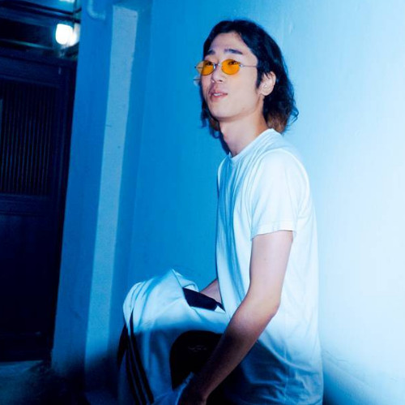

대한민국 클라우드 랩의 개척자. 던밀스가 낳고 양동근이 키운 천부적인 재능을 가진 래퍼 한국의 래퍼로 본명은 심현보. 1992년 7월 18일생. FPL Crew의 일원이며 원래는 아는 사람이 거의 없었지만 후술할 쇼미더머니3 지원 이후 사운드 클라우드에 업로드한 수많은 믹스테잎을 통해 유명세를 탔다. 이름의 어원은 'Domino와 본명인 '현보'의 합성어다. 디보는 유학 시절 토론토에서 열리는 축제에 간 적이 있는데, 황마 K가 공연하는 모습을 보았다고 한다. 그런데 황마 K의 모습이 너무 멋져보였고, 자신도 힙합을 하고 싶다는 생각이 든 것이 계기였다고 한다. 그 뒤 19살때 어쩌다 황마 K의 집에 놀러 가게됐는데, 그날 처음 가사를 쓰고 녹음을 했다고 한다. 참고로 그의 크루 FPL은 Toronto Finch Station 옆 주차장에서 매주 토요일 마다 비트 틀어놓고 랩 싸이퍼를 했는데 그러다 DZ, Kigga, Briel 과 함께 크루를 만들었다고 한다. 원래 Finch Parking Lot 아님 Freestyle Parking Lot이었는데 결국 Fuck Peace Love로 굳어졌다고 한다. 그리고 비프리가 설립한 뉴웨이브 레코즈에 잠시 동안 입단하기도 했다. 그런데 그것도 매니지먼트 계약이었고 지금은 다시 인디펜던트 아티스트로 활동 중이다. 최근 CokeJazz, 블랙넛과 작업하는 사진을 인스타에 올렸다. 그리고 곧 정규 앨범이 나올 예정이라고 한다. 블랙넛과 작업한 사진은 저스트뮤직의 3번째 컴필레이션 앨범의 수록곡 'One Hunnit'에 참여했던 것으로 확인되었다. 콕재즈와는 '반짝반짝' 이라는 곡을 합작했다. 정규앨범을 발매하기 전, 같은 크루원인 Briel과 함께한 앨범 'YOUNG SPRITE'를 발매했다. 쇼미더머니 트리플세븐에 참가한다고 한다.
